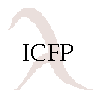

| Proceedings of the Workshop on |  |
| Functional and Declarative Programming in Education | |
| Paris, 29 September 1999 |
If you wish to receive a paper copy of the proceedings, please send email to Donna Jares
This technical report contains the papers presented at the workshop on Functional and Declarative Programming in Education 1999 (FDPE'99). The workshop took place in Paris, France, on September 29, 1999. The aim of FDPE'99 was to provide a forum for researchers and teachers who love using functional and declarative languages for instructional purposes.
The organizers selected seven papers from 17 draft papers, which were submitted in response to a call for papers. All organizers reviewed all of the papers. Following the review process, the program committee held a virtual meeting. The meeting lasted four days, with lively discussions. The organizers summarized the comments raised during this virtual meeting and forwarded them to the authors. Much of the administration of the discussion was performed via Scheme-generated HTML pages.
| Matthias Felleisen | Michael Hanus | Simon Thompson |
| Rice University, USA | RWTH Aachen, Germany | University of Kent, UK |
| FDPE'99 Organizing Committee | ||
Matthias Felleisen, Michael Hanus, and Simon Thompson.
Proceedings of the Workshop on Functional and Declarative Programming in Education
Rice Technical Report 99-346. August 1999.